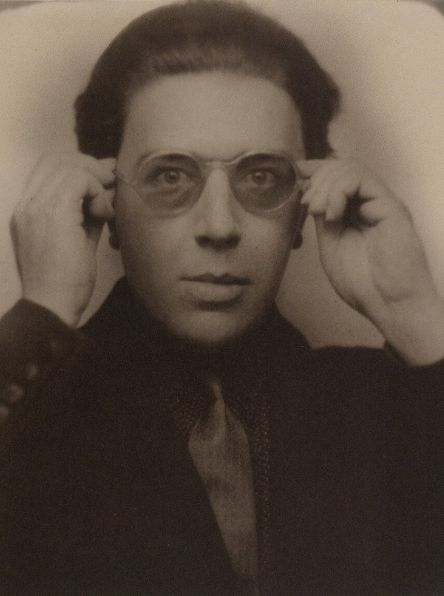
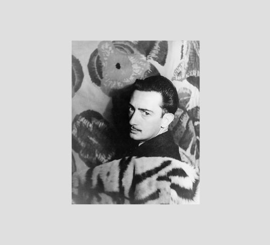
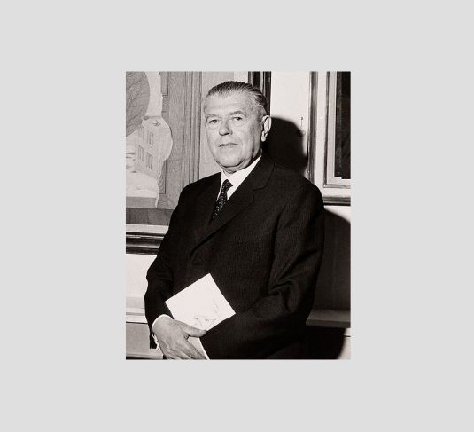
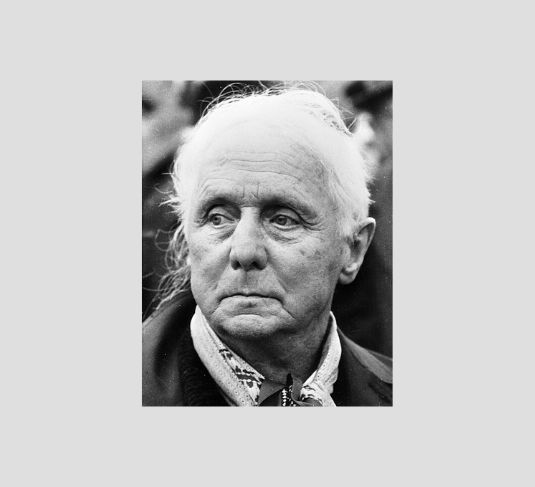
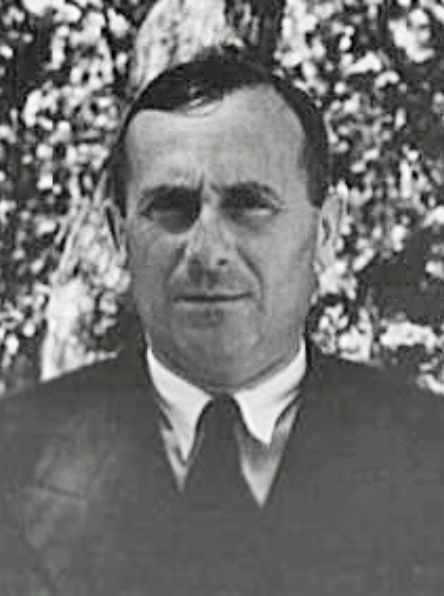

Poeta, ensayista y crítico francés, considerado el fundador y principal teórico del surrealismo. Su formación inicial estuvo marcada por el interés en la literatura y la filosofía, pero durante la Primera Guerra Mundial trabajó en hospitales psiquiátricos, experiencia que lo acercó al estudio de la mente humana. Influido por las teorías de Sigmund Freud, Breton concibió el arte como un medio para explorar el inconsciente. En 1924 publicó el Manifiesto Surrealista, texto fundacional del movimiento, donde definió el surrealismo como “automatismo psíquico puro”. Bretón no sólo fue un escritor, sino también un organizador cultural: reunió a artistas y escritores en torno a la idea de liberar la imaginación y cuestionar las normas racionales. Su liderazgo intelectual convirtió al surrealismo en una vanguardia con bases teóricas sólidas y gran proyección internacional.

Pintor español nacido en Figueres, Cataluña, célebre por su estilo minucioso y sus imágenes oníricas. Estudió en la Academia de Bellas Artes de Madrid, donde comenzó a relacionarse con intelectuales de la Generación del 27. En 1929 se integró al grupo surrealista de París liderado por Breton. Dalí desarrolló el método paranoico-crítico, que consistía en inducir estados de asociación delirante para generar imágenes inesperadas. Sus obras, como La persistencia de la memoria (1931), se caracterizan por relojes blandos, paisajes desérticos y símbolos personales que exploran la fragilidad del tiempo y la irracionalidad de la mente. Además de la pintura, Dalí trabajó en cine, escultura y diseño, convirtiéndose en una figura mediática que llevó el surrealismo al gran público.

Pintor belga cuya obra se distingue por la representación de objetos cotidianos en contextos insólitos. Magritte buscaba cuestionar la relación entre imagen y realidad, generando enigmas visuales que invitan a la reflexión. Obras como La traición de las imágenes (1929), donde se lee “Esto no es una pipa” bajo la imagen de una pipa, ponen en evidencia la distancia entre representación y objeto. Su estilo, aparentemente sencillo, esconde una profunda carga filosófica: el arte como herramienta para desestabilizar la percepción y revelar lo absurdo de lo cotidiano. Magritte influyó en el arte conceptual y en movimientos posteriores como el pop art.

Artista alemán que transitó del dadaísmo al surrealismo, aportando técnicas innovadoras. Desarrolló el frottage (frotar lápiz sobre superficies rugosas para obtener texturas) y el grattage (raspar la pintura para revelar formas ocultas). Estas técnicas permitían que las imágenes surgieran de manera espontánea, en línea con la idea surrealista de liberar la creatividad del control racional. Obras como La Virgen castigando al Niño Jesús ante tres testigos(1926) muestran su espíritu provocador y experimental. Ernst también trabajó en escultura y collage, convirtiéndose en uno de los artistas más versátiles del movimiento.

Pintor y escultor español nacido en Barcelona, cuya obra se caracteriza por formas orgánicas, colores intensos y símbolos poéticos. Aunque evolucionó hacia la abstracción, mantuvo siempre una conexión con el espíritu surrealista, especialmente en su interés por representar el mundo de los sueños y la imaginación. Sus composiciones, como El carnaval de Arlequín (1924–25), presentan figuras flotantes y espacios abiertos que transmiten una sensación de libertad y juego. Miró también incursionó en la escultura y el grabado, consolidándose como una figura clave en la transición hacia el arte abstracto del siglo XX.